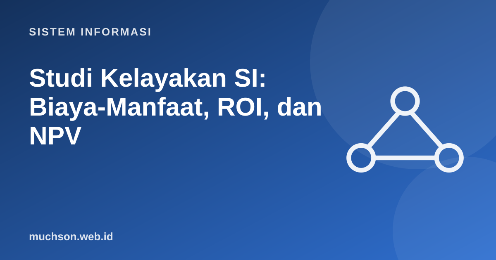

Beranda › Artikel › Sistem Informasi
Sistem InformasiStudi Kelayakan SI: Biaya-Manfaat, ROI, dan NPV
Sebelum menginvestasikan waktu dan uang pada sistem baru, organisasi bertanya: apakah ini layak? Studi kelayakan menjawab dari beberapa sudut: bisakah dibangun, akankah dipakai, apakah menguntungkan, dan sempatkah diselesaikan. Bagian ekonomi memakai hitungan sederhana yang sangat berguna.
Sebaiknya sudah paham: SDLC

Setelah membaca dan mencoba materi ini, Anda mampu:
- menjelaskan aspek kelayakan TELOS (teknis, ekonomi, legal, operasional, jadwal)
- mengklasifikasikan biaya dan manfaat (berwujud dan tak berwujud, satu kali dan berulang)
- menghitung ROI dan payback period
- menghitung NPV dengan nilai waktu uang
- menyusun rekomendasi kelayakan dengan analisis sensitivitas
Lima aspek kelayakan (TELOS)
| Aspek | Pertanyaan | Contoh pemeriksaan |
|---|---|---|
| Teknis | Apakah teknologi dan keahlian tersedia? | Tim menguasai teknologi; infrastruktur memadai |
| Ekonomi | Apakah manfaat melebihi biaya? | ROI, NPV, payback |
| Legal | Apakah memenuhi hukum dan kontrak? | Perlindungan data pribadi, lisensi |
| Operasional | Apakah akan dipakai dan cocok dengan proses? | Penerimaan pengguna, kesiapan organisasi |
| Schedule (jadwal) | Dapatkah diselesaikan tepat waktu? | Tenggat regulasi, ketersediaan sumber daya |
Biaya dan manfaat
ROI dan payback period
ROI = (Total manfaat − Total biaya) / Total biaya × 100%
Payback period = waktu sampai manfaat kumulatif menutup biaya investasi
Nilai waktu uang dan NPV
Rp1 juta hari ini lebih berharga daripada Rp1 juta tiga tahun lagi, karena bisa diinvestasikan atau tergerus inflasi. NPV (Net Present Value) menjumlahkan arus kas masa depan setelah didiskon ke nilai sekarang dengan tingkat diskonto r.
NPV = −I₀ + Σ ( Arus kas ke-t / (1 + r)ᵗ ), t = 1..n
def npv(r, investasi, arus):
return -investasi + sum(a / (1 + r) ** t for t, a in enumerate(arus, 1))
def payback(investasi, arus):
kumulatif = 0
for t, a in enumerate(arus, 1):
if kumulatif + a >= investasi:
return t - 1 + (investasi - kumulatif) / a # interpolasi linear dalam tahun
kumulatif += a
return None
investasi = 500_000_000
manfaat = [150_000_000, 220_000_000, 260_000_000, 260_000_000, 260_000_000] # penghematan bersih per tahun
biaya_operasi = [40_000_000] * 5
arus = [m - b for m, b in zip(manfaat, biaya_operasi)]
print("arus kas bersih per tahun:", arus)
total_manfaat, total_biaya = sum(manfaat), investasi + sum(biaya_operasi)
print(f"ROI 5 tahun : {(total_manfaat - total_biaya) / total_biaya * 100:.1f}%")
print(f"payback period : {payback(investasi, arus):.2f} tahun")
for r in (0.08, 0.12, 0.20):
print(f"NPV pada r={r:.0%} : Rp{npv(r, investasi, arus):,.0f}")arus kas bersih per tahun: [110000000, 180000000, 220000000, 220000000, 220000000]
ROI 5 tahun : 64.3%
payback period : 2.95 tahun
NPV pada r=8% : Rp242,250,803
NPV pada r=12% : Rp162,948,724
NPV pada r=20% : Rp38,490,226
Analisis sensitivitas
Estimasi manfaat selalu tidak pasti. Uji bagaimana kesimpulan berubah bila asumsi bergeser: manfaat 30% lebih kecil, biaya 20% lebih besar, penundaan setahun.
def npv(r, investasi, arus):
return -investasi + sum(a / (1 + r) ** t for t, a in enumerate(arus, 1))
investasi = 500_000_000
dasar = [110_000_000, 180_000_000, 220_000_000, 220_000_000, 220_000_000]
for nama, faktor_manfaat, faktor_investasi in [("dasar", 1.0, 1.0), ("manfaat -30%", 0.7, 1.0), ("investasi +20%", 1.0, 1.2), ("keduanya buruk", 0.7, 1.2)]:
arus = [a * faktor_manfaat for a in dasar]
v = npv(0.12, investasi * faktor_investasi, arus)
print(f"{nama:<16} NPV = Rp{v:>15,.0f} -> {'LAYAK' if v > 0 else 'TIDAK LAYAK'}")dasar NPV = Rp 162,948,724 -> LAYAK
manfaat -30% NPV = Rp -35,935,893 -> TIDAK LAYAK
investasi +20% NPV = Rp 62,948,724 -> LAYAK
keduanya buruk NPV = Rp -135,935,893 -> TIDAK LAYAK
Jangan hanya mengandalkan angka. Proyek wajib seperti kepatuhan regulasi atau perbaikan keamanan mungkin tidak "menguntungkan" secara finansial tetapi tetap perlu dilakukan. Dan manfaat tak berwujud tetap harus dibahas secara terbuka, bukan diabaikan.
1. Investasi Rp200 juta, arus kas bersih Rp80 juta per tahun selama 4 tahun. Berapa payback period sederhana dan ROI?
2. Mengapa payback period saja tidak cukup?
3. Apa yang dimaksud biaya tersembunyi? Beri dua contoh.
4. Sebutkan tiga asumsi yang perlu diuji pada analisis sensitivitas sistem ERP.
- Kelayakan TELOS: teknis, ekonomi, legal, operasional, jadwal.
- Klasifikasikan biaya dan manfaat; sertakan biaya tersembunyi.
- ROI, payback, dan NPV dengan nilai waktu uang.
- Analisis sensitivitas menguji kekokohan kesimpulan.
- Pertimbangkan faktor non-finansial dan kewajiban regulasi.
Tanya jawab
Apa itu IRR?
Bagaimana menentukan tingkat diskonto?
Apakah TCO sama dengan biaya proyek?
Referensi
- Kenneth C. Laudon dan Jane P. Laudon, Management Information Systems: Managing the Digital Firm (Pearson)
- Brealey, Myers, Allen, Principles of Corporate Finance (McGraw-Hill)
- Kathy Schwalbe, Information Technology Project Management (Cengage)
- Ian Sommerville, Software Engineering (Pearson)